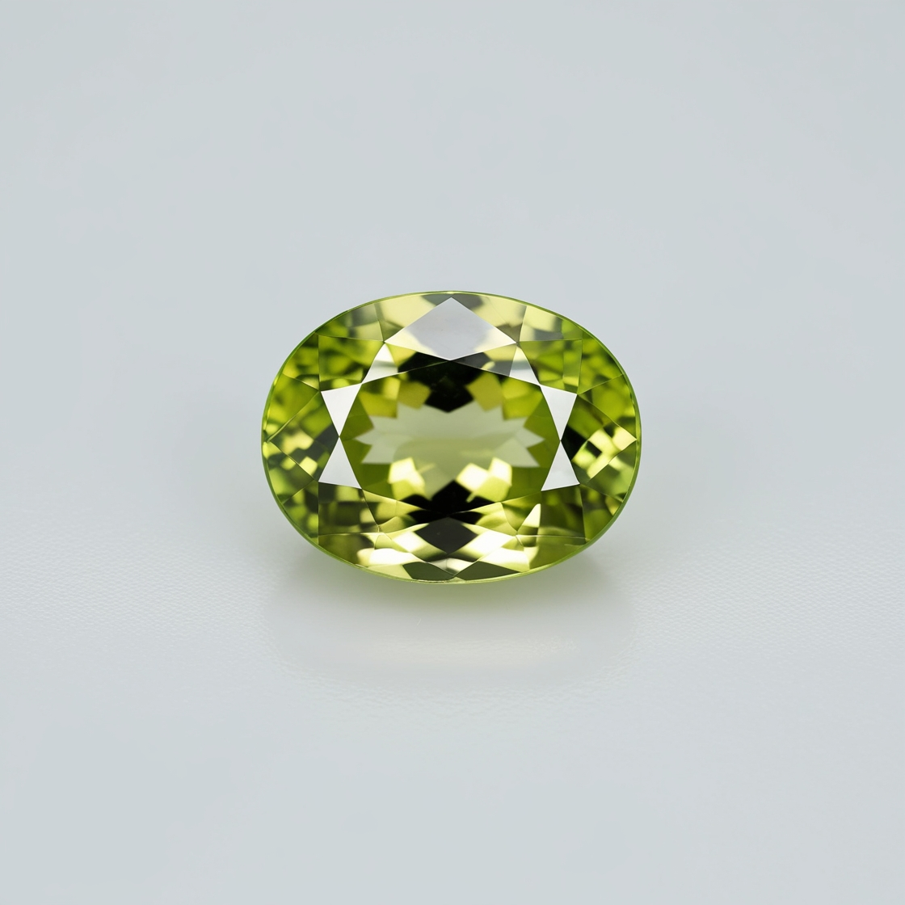
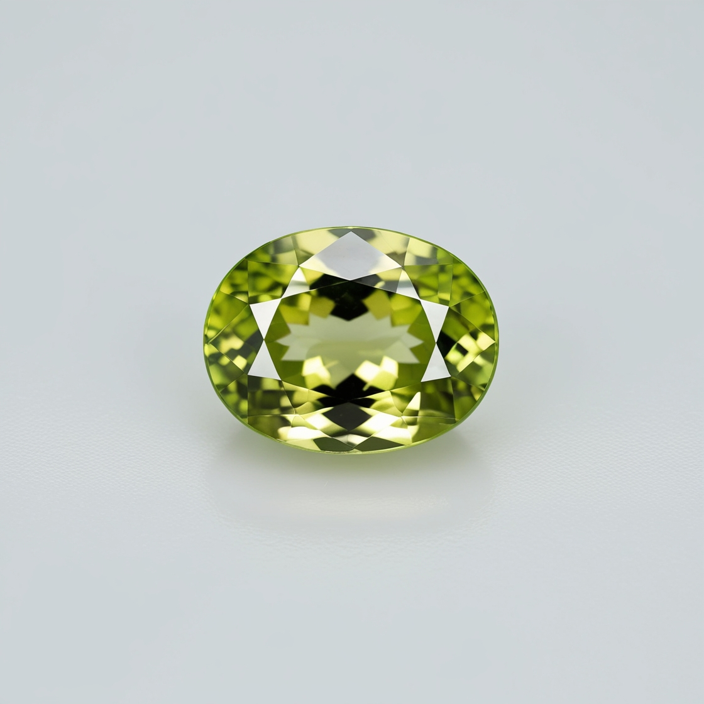

.jpg)
üî∂ Diamond
Colors: Typically colorless, but also found in shades of blue, yellow, pink, and black.
History: Known as the “King of Gems,” diamonds have been treasured for centuries for their brilliance and durability.
Regions: Major sources include South Africa, Botswana, Russia, and Canada.
Prices: Valued based on the 4Cs (cut, clarity, color, carat). Rare colors fetch record-breaking prices.
.png)
.jpg)
üîµ Ruby
Colors: Deep red, often referred to as “pigeon blood” red.
History: Revered since ancient times, rubies were believed to hold the power of life and passion.
Regions: Myanmar’s Mogok Valley is world-famous, with deposits in Thailand, Sri Lanka, and Mozambique.
Prices: High-quality rubies are among the most expensive gems, often surpassing diamonds in price per carat.

üåø Emerald
Colors: Rich green to bluish-green, often with natural inclusions.
History: Cherished by royalty for centuries, emeralds were prized by Cleopatra.
Regions: Colombia produces the finest emeralds, with notable sources in Zambia and Brazil.
Prices: High-quality emeralds with vivid color and minimal inclusions command premium prices.
üî∂ Topaz
Colors: Found in golden yellow, blue, pink, and colorless varieties.
History: Believed to provide strength and protection, revered in India and Egypt.
Regions: Brazil is the leading source, with deposits in Nigeria, Sri Lanka, and Russia.
Prices: Blue topaz is affordable, while imperial topaz can be highly valuable.
üíú Amethyst
Colors: Deep purple to lavender, with rich violet tones.
History: Once as valuable as rubies, believed to prevent intoxication in ancient Greece.
Regions: Brazil, Uruguay, and Zambia are major producers.
Prices: Readily available and affordable, often used in jewelry and carvings.
üî∑ Firoz (Turquoise)
Colors: Sky blue to greenish-blue, often with matrix patterns.
History: Known as “Firoza,” worn for protection and fortune for 3,000 years.
Regions: Iran’s Nishapur mines are legendary, with sources in USA and China.
Prices: Pure sky-blue turquoise is the most prized variety.
 

üíö Peridot
Colors: Bright lime to olive green with golden undertones.
History: Called the “gem of the sun” by ancient Egyptians, mined since 1500 BCE.
Regions: Kashmir (Pakistan) produces fine peridot, with sources in Myanmar and USA.
Prices: Generally affordable, but flawless large stones are highly prized.
.png)
üåä Aquamarine
Colors: Pale blue to deep ocean blue, with watery clarity.
History: Named for “sea water,” believed to protect sailors.
Regions: Brazil is the primary source, with deposits in Madagascar and Pakistan.
Prices: Usually affordable, but deep blue stones are more valuable.

üîµ Sapphire
Colors: Royal blue is most famous, but also comes in pink, yellow, and green.
History: A symbol of wisdom and nobility, used in royal crowns.
Regions: Sri Lanka, Myanmar, and Kashmir are renowned, with sources in Madagascar.
Prices: Blue sapphires with strong saturation rival rubies in value.